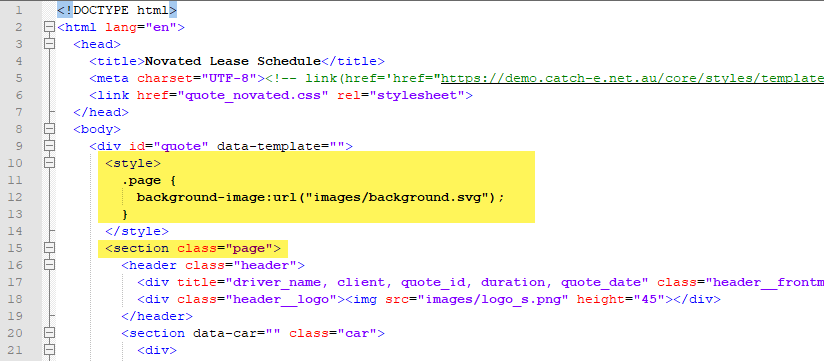
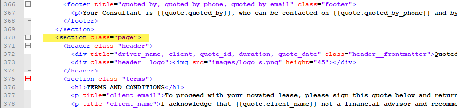
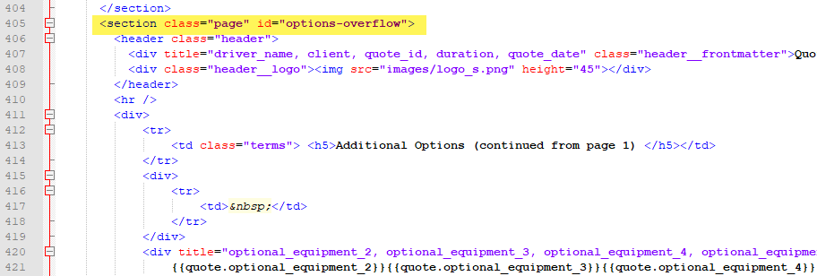

Template:Quote Form:Troubleshooting
From Help wiki
[edit]
I get a validation alert on the Quotes / Contract tab when I try to print my html.zip quote
The zip folder you have uploaded has folders nested inside it. Fix and upload again.
Correct set-up
- novated_lease.zip
- ¬ images
- ¬ quote_novated.css
- ¬ quote_novated.html
- ¬ quote_novated.json
Zip files will create error
- novated_lease.zip.zip
- ¬ novated_lease.zip
- ¬ images
- ¬ quote_novated.css
- ¬ quote_novated.html
- ¬ quote_novated.json
Below is an example of a how a simple quote zip should look when extracted.
Go to the Quote Template Setup page to review the quote zip set-up steps.

[edit]
My html.zip quote will not print and there is no error message
Check that you have a User called 'web_quote'. The password for this user must be the same as the one set in the Global Controls record html2pdf_service_login.
[edit]
I want to add a second page to my html.zip quote
Here's how the Catch-e Demo second page was created.
1. Set a page instruction in the *.css for the page management

2. Set the page 1 section

3. Set the page 2 section

4. Add an overflow section if you're listing options in detail


{kind=link}
{kind=link}
{kind=link}